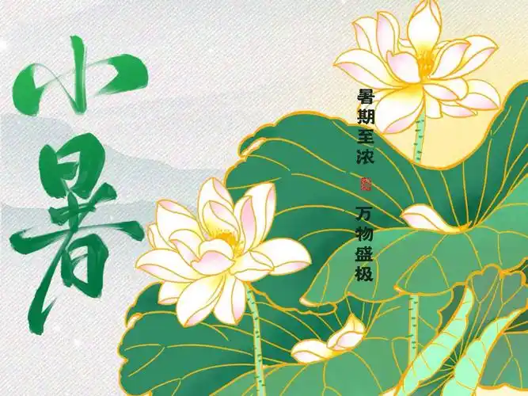
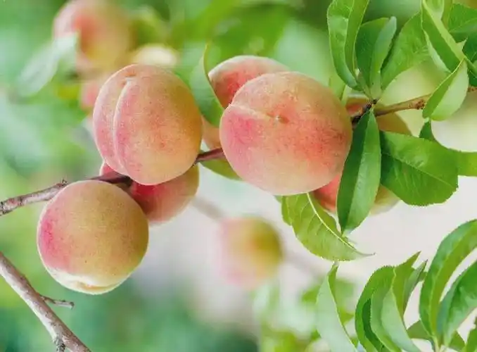

小暑三候详解
一候：温风至
小暑时节，大地热气蒸腾，自然界的凉风逐渐被温热的暑风所取代。《月令七十二候集解》曰："温风至，至此而温热之风至此矣。"这标志着盛夏正式来临。
特征表现：
- 空气湿度明显增加，风中带着湿热气息
- 清晨与傍晚温差缩小，全天温热
- 草木散发浓郁青气，植物新陈代谢旺盛
- 风向转为南风，携带海洋湿润空气
此时的气温变化标志着农作物进入快速生长期，也为后续的雷雨天气创造了条件。

二候：蟋蟀居宇
由于地面温度过高，原本在田野间活动的蟋蟀纷纷离开酷热的田野，来到阴凉的庭院墙角下避暑。《诗经·七月》中早有记载："七月在野，八月在宇，九月在户，十月蟋蟀入我床下。"
物候意义：
- 蟋蟀的迁徙标志着地表温度已不适合昆虫活动
- 反映了动物对极端气候的适应性行为
- 蟋蟀的鸣叫声成为夏夜的重要特征
- 古人常以蟋蟀活动判断季节更替
蟋蟀避暑的行为提醒人们注意防暑降温，同时也预示着盛夏酷热已经来临。

三候：鹰始鸷
"鸷"意为凶猛，指老鹰因地面气温过高而变得更加凶猛，多在清凉的高空中活动。《礼记·月令》记载："鹰乃学习"，意为幼鹰开始学习飞翔和捕食。
生态观察：
- 鹰类在高空盘旋以避暑，寻找猎物
- 幼鹰开始离开巢穴，学习飞行技巧
- 鹰击长空的景象更加频繁
- 高空空气流动快，温度相对较低
鹰的习性变化不仅反映了气温的升高，也体现了生物为适应环境变化而调整行为策略的智慧。
小暑物候整体特征
小暑是盛夏的开端，其物候特征鲜明，反映了自然界对暑热的适应与应对。
气候特征：
- 气温显著升高，进入"三伏"的初伏阶段
- 降水增多，多为雷阵雨，但分布不均
- 湿度增大，闷热感明显
- 日照时间达到一年中最长
生物响应：
- 植物生长旺盛，光合作用加强
- 许多动物调整活动时间，避开正午高温
- 昆虫活跃度达到高峰
- 水生生物繁殖活动频繁
这些物候特征不仅指导着农事活动，也蕴含着人与自然和谐相处的智慧。
